高校科研教学样课01 AI 辅助文献筛选的研究设计
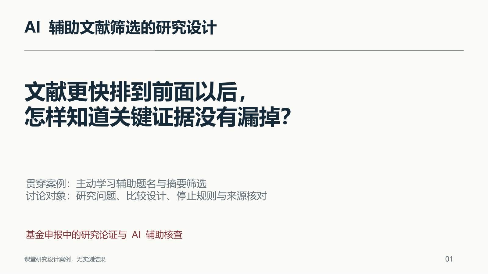
请学员先想一个自己做过的检索任务：耗时主要发生在检索、去重、初筛还是全文判断？本段只讨论题名和摘要筛选。主动学习使用人工反馈调整排序，与让大模型直接写综述是不同任务。最后要求学员交出一页研究设计工作底稿，不生成基金申请书。
02 基金申请中的 AI 使用规定
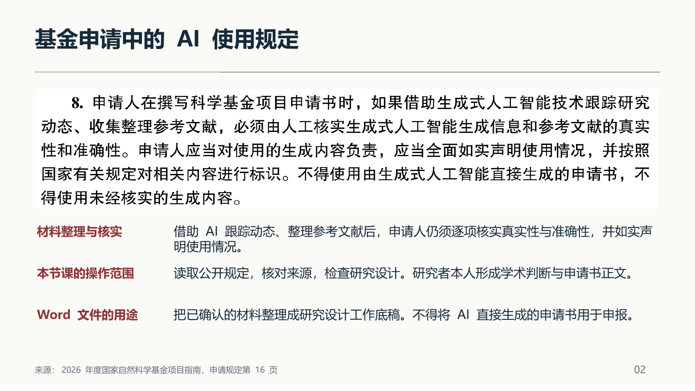
投影中的原文来自2026年度申请规定，印刷页16，四（二）第8项。请学员注意“人工核实”“如实声明”和不得直接生成申请书的要求。人工点击批准不能自动改变内容的来源，也不能把模型代写变成申请人本人撰写。本节的Word是内部教学工作底稿，包含待验证设计，不能当成可提交申请书。不同资助机构要求应分别核查。
03 2026 年正文结构与研究论证
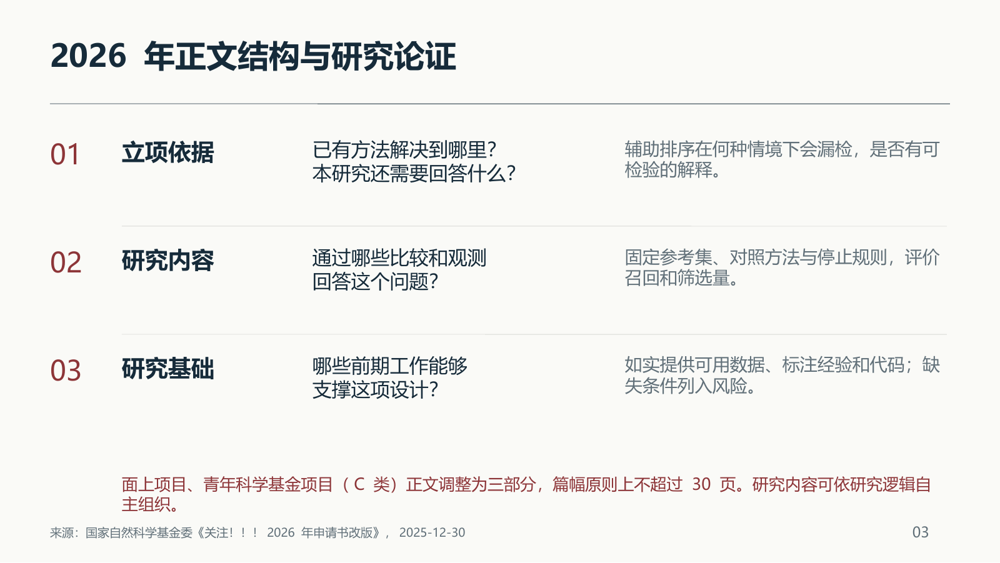
官方改版消息发表于2025-12-30，适用对象明确是面上与青C。不要把三部分推广为所有类型基金的统一模板。技术路线、目标和指标仍然要讲清，但无需机械复制旧的六个独立标题。表中案例落点是课堂解释，不是基金委给出的评分标准。原项目的六节教学模板只是一份模拟文件，不能用作2026面上正式模板。
04 “提高筛选效率”还缺少哪些条件
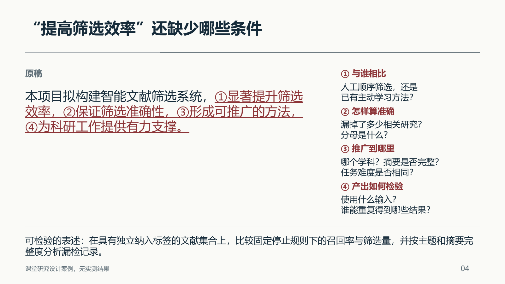
先让学员读原稿，只问：评审能否据此判断方案成败？“显著”需要统计设计和结果支撑；拟开展研究时不能预写效果。本页改写仍不构成完整方案，还缺数据来源、纳入标准和具体比较方法，后续逐页补足。上下两段均为课程编写的示例，没有对应真实申报或结果。
05 ASReview 的人工反馈循环
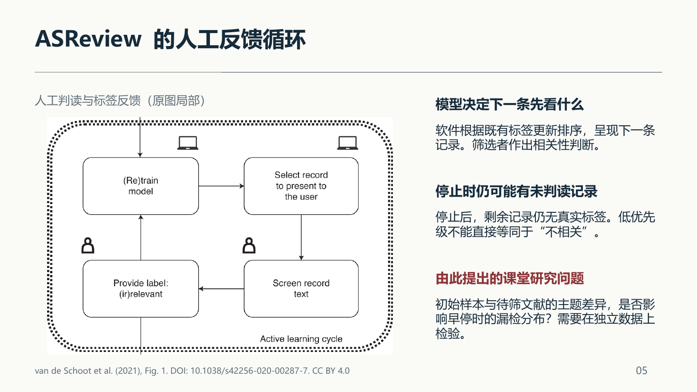
左图为van de Schoot等2021年论文Fig.1的主动学习循环局部，保留人工与计算机图标，未重绘。原完整图随来源材料保存。指着Screen record text和Provide label解释人的作用。完整流程在循环之后还有停止标注，停止后可能留有尚未判读的记录。不能从该图推出LLM可以自动完成综述。原文说明默认配置在实际应用中需检查。本页提出的主题差异问题只是教学选题，未完成系统查新，不宣称首次研究或方法创新。原图CC BY4.0，裁剪已标注。
06 比较设计：同一参考集，两条筛选路径
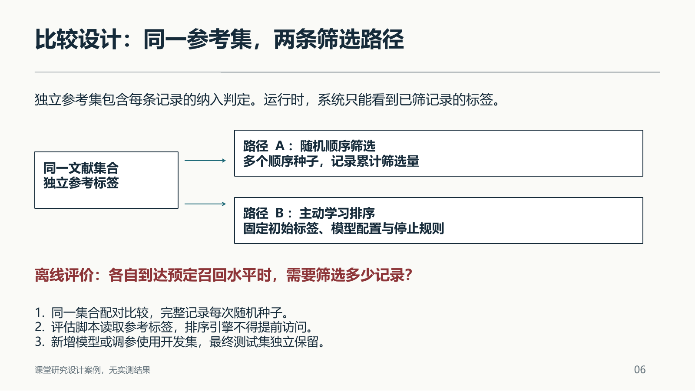
这是拟议离线研究设计，没有实施实验。路径A用于量化随机排序下的筛选工作，不能把它叫作所有专家人工行为的替代。多次随机顺序和不同初始标签分别构成重复来源，应按数据集汇总，并展示变异。参考标签来自独立标注与仲裁，标签也可能存在误差。评价脚本可使用全部参考答案，排序过程不能使用尚未揭示的答案。
07 研究目标、观测量与结论范围
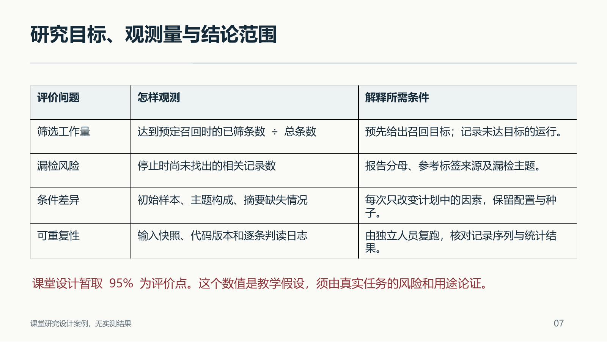
不要把95%说成通用合格线，也不要预写可节约多少人力。优先按数据集和重复运行报告分布，数据集之间是否适合合并需要额外论证。时间指标必须说明是否含人工阅读、模型运算和核对成本。漏检的影响还取决于研究内容，少数决定性研究的漏失可能改变结论。
08 召回率与筛选量的课堂算例
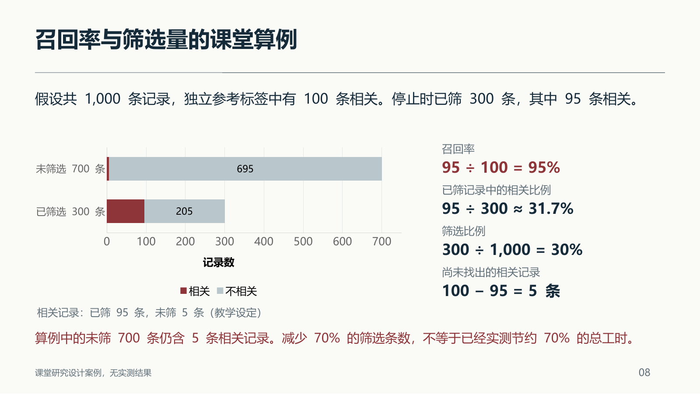
全部数字为教学设定，图中四个计数分别为95、205、5、695，合计1000。请学员先独立算95/300，再讨论为何这不是召回率。总工时还包含前期标签建立、模型配置、推断等待和复核，因此不能用条数直接代替工时。此例没有置信区间、显著性检验或实际研究结果。
09 停止规则与未知的漏检量
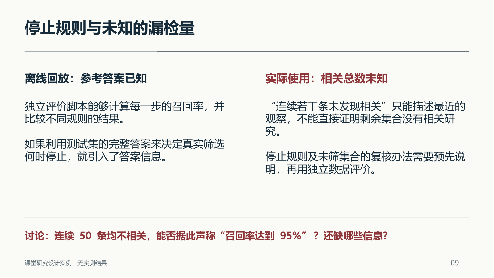
参考回答：不能。缺少剩余总体的相关情况、抽取方式、记录之间的依赖及规则校准证据。主动学习排序后的连续50条不是简单随机样本，不能套用普通随机抽样直觉。可研究独立审计样本或经外部验证的停止策略，但本课未验证具体策略。把这部分写成待研究的方法条件，而非给出普适保证。
10 技术路线中的输入、判断与输出
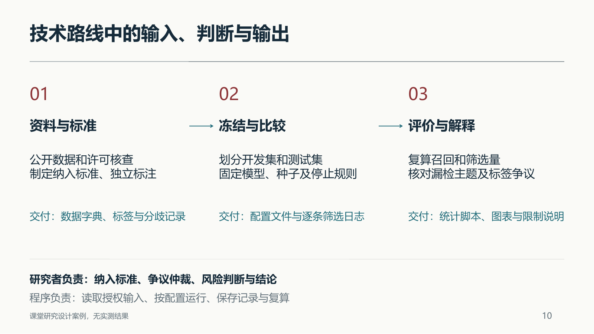
沿每个阶段问输入在哪里、谁作判断、输出怎样核对。箭头表达前后依赖，无法取得可用标签时就不能跳到召回评价。初始标注、调参和测试标签隔离是最容易漏写的控制条件。阶段并非固定月份承诺，真实申请需结合经费、人员及数据条件安排。右侧输出均为计划交付，不能冒充已经完成的产物。
11 证据怎样支撑研究者的论述
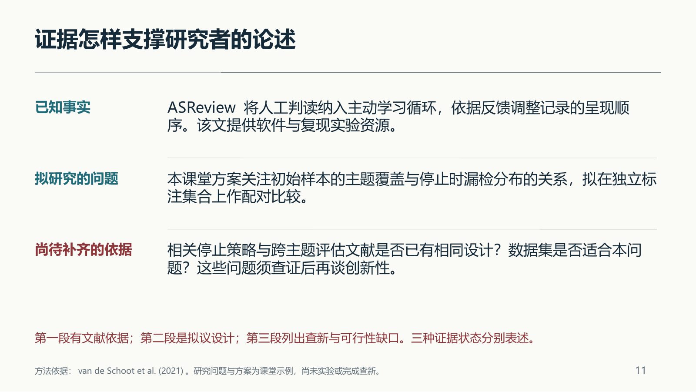
这三段是AI辅助编写的课堂说明，不是申请人本人撰写的申报正文。不要把已有软件功能改写成自己的创新点，不把拟研究的效果写成前期结果。请学员逐句问：这句话依赖哪一条来源？表示事实、假设还是计划？能否从文献定位原意？全文读后仍应补充后续文献，2021年的论文不能代表2026年研究全貌。
12 研究设计工作底稿的核对
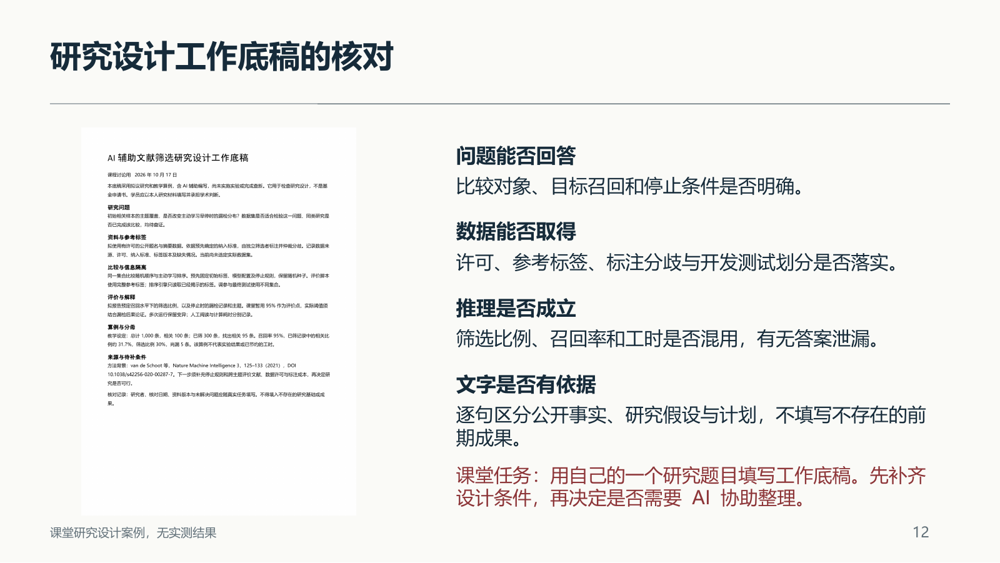
左侧为本课程实际生成的Word工作底稿页面，不是Agent执行成功截图。文档标注教学用途与AI辅助编写，包含未验证条件，不能用于基金申报。学员填写自己的内容时由本人负责研究判断与撰写。讲师检查时只要发现关键输入未落实，就把它记为开放问题，不能用润色掩盖。建议最后选一位学员用两分钟说明其对照和分母。